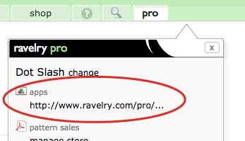
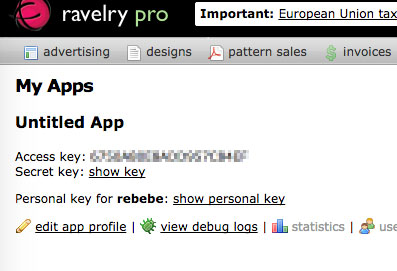

Step 1: Getting Started
You will want to complete these steps ASAP, since it may take a while to get your access key.
- If you do not already have a Ravelry account, sign up for one.
- Create a free Pro account with Ravelry here. You will need to create a "Business Name". This can be either your ravelry username, or anything you want. After you have done so, you can access your Pro account from your menu bar.
- Join the Ravelry API Group.
- Once you've become a member, request an API key in this thread. It make take up to a week for them to grant your request, so be sure to request early.
- Once you have an API key, you can access it from your pro account.

